荔枝派zero开箱指南
Zero各部分简介
正面：
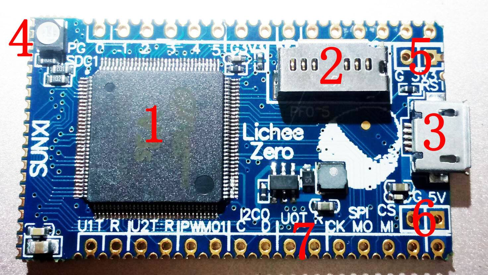
- 主控v3s芯片，Allwinner V3s (ARM Cortex-A7 CPU, 1.2GHz, 512Mbit DDR2 integrated)
- tf卡插槽，tf卡金手指朝下插入。
- micro usb口,可以用来给板子供电，也可以通过micro usb otg转接线转成标准usb大口然后连接各种usb外设，比如usb无线网卡。也可以接一个usb hub方便插多个usb设备。
- 一个RGB灯。
- 板子3.3V输出，注意方形焊盘是正。
- 板子5V供电输入，也可以接3.7v锂电池给板子供电，注意方形焊盘是正。
- UART0扩展接口，主要用来通过串口工具连接PC调试使用。
- 上边两排分别有两排2.54排针焊接孔和两排1.27排针焊接孔（是邮票半孔），方便扩展，一般扩展只需焊接上下两排2.54排针即可。
反面：
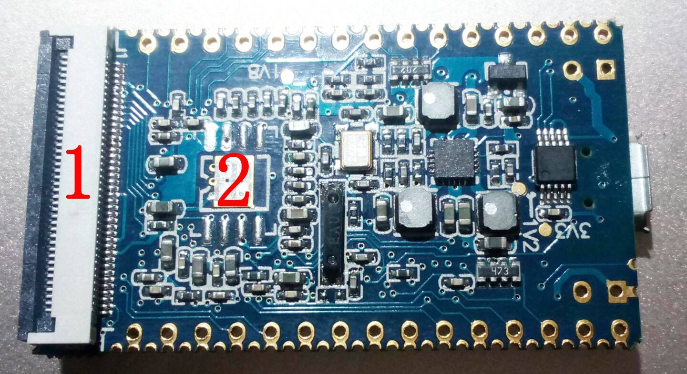
- 40P 通用RGB屏幕接口
- spi flash焊盘，默认没有焊接。
焊接好排针：
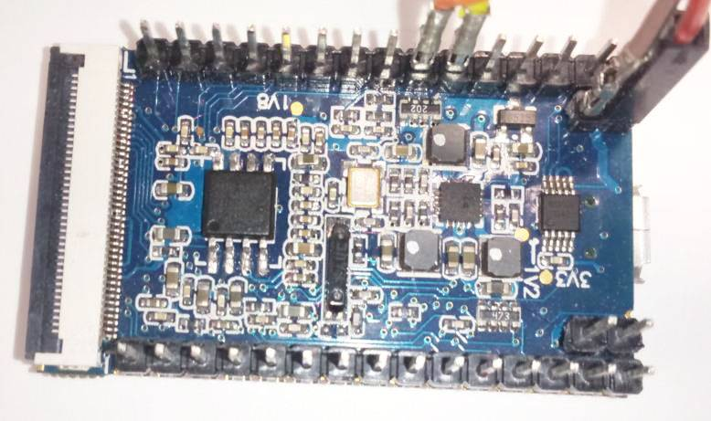
启动方式介绍
最常用的启动方式是sd卡启动，网盘有可以直接使用的linux系统镜像，直接烧入sd卡后便可以启动并使用linux系统。也支持其他启动方式spi flash、网络启动、usb下载启动等。
系统镜像组成部分介绍
SD卡中的系统镜像一般分为三个区，第一个区称为boot区或者引导区，该部分没有文件系统而是直接将二进制的bootloader(uboot)文件直接写入。第二个区可以被称为linux内核区，fat文件系统，存放linux内核、内核参数文件还有设备数dtb文件。第三个区是root分区，用来存放根文件系统和用户数据等，一般是ext4文件分区格式。
镜像烧录及简单演示
在tf卡上创建分区文件系统
首先需要一台linux操作系统的电脑或者在vmware虚拟机上安装linux系统，推荐ubuntu14
64位版本，ubuntu系统默认安装即可。
我使用的是vmware虚拟机的形式，在vmware上安装完毕ubuntu后推荐安装vmware
tools工具，安装这个工具后可以在windows和ubuntu桌面之间直接无缝复制粘贴文件。
下面制作tf卡启动系统，需要一张大于8g的tf卡和一个读卡器，将tf卡插入读卡器并插入电脑。如果是虚拟机请检查下虚拟机右下角这个图标的状态，如下图
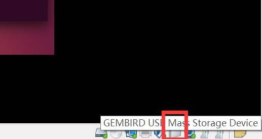
如果是这种灰色的表示读卡器的操作权在windows系统，需要点击一个这个图标，选择链接（断开与主机连接），这样读卡器的控制器才能到虚拟机linux系统中。
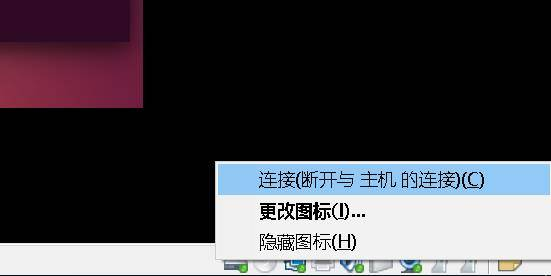
在桌面环境搜索gparted分区编辑器并打开。
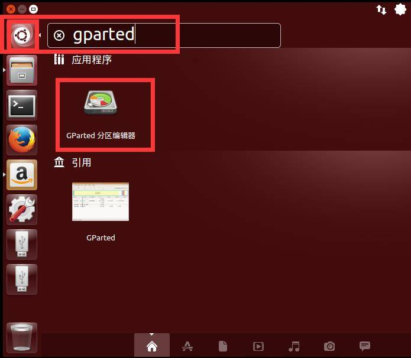
输入超级用户密码
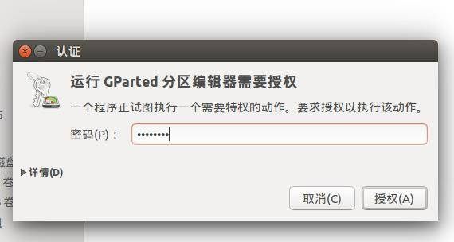
在右上角中选择tf卡对应的设备
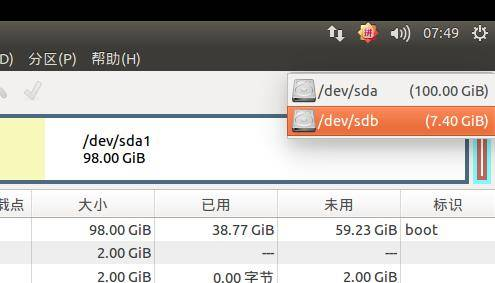
依次选中tf卡上已经存在的分区，右键【删除】来删除分区
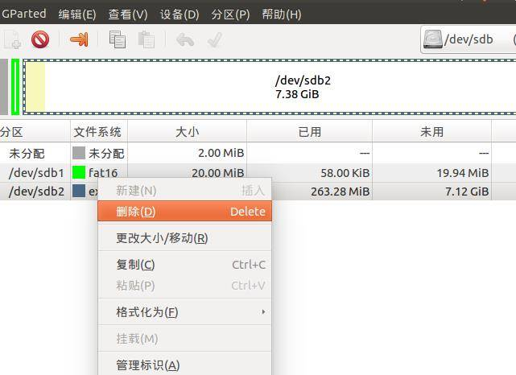
如果只有【卸载】选择，那么需要先点击卸载，然后再删除分区。
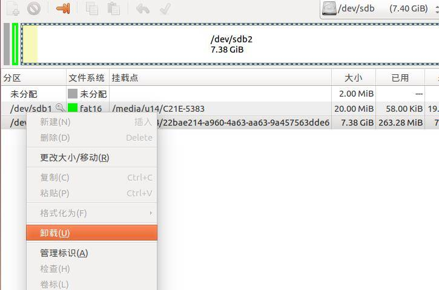
所有分区删除完毕后，点击右上角对勾，将操作应用到磁盘。
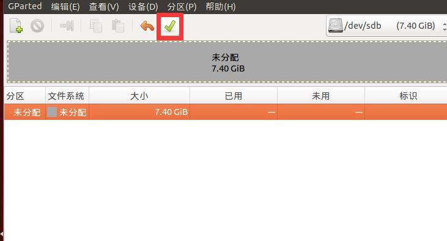
点击左上角加号创建新分区，之前剩余空间输入2MB(主要用来存放uboot)，新大小输入20，文件系选择fat16，点击添加。
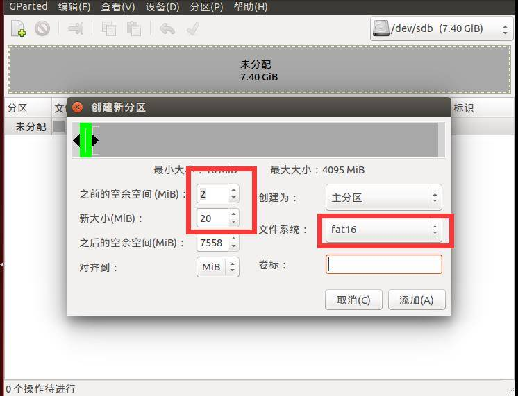
再次点击左上角加号创建新分区，这次使用所有的默认参数如下图所示，分区大小将使用tf卡剩余的所有空间，文件系统是ext4.
点击对勾，应用创建分区到tf卡。
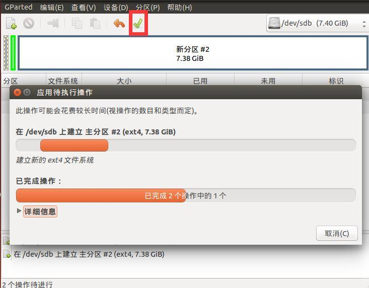
打开linux终端，输入命令sudo fdisk –l 可以看到刚才我们创建的两个分区。
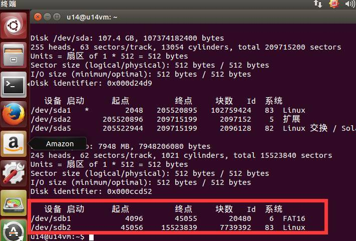
/dev/sdb即代表tf卡，/dev/sdb1代表的是tf的第一个分区，/dev/sdb2代表的是tf的第二个分区
烧写镜像：
从百度网盘镜像及SDK：链接: https://pan.baidu.com/s/1nv7Fq2X 密码: 5gec
下载镜像文件，zero_imager.zip包含内核启动文件、内核镜像和烧写脚本。rootfs-xxxx.tar.gz是根文件系统，根据不同的需求打包制作出了多个根文件系统
rootfs-brmin.tar.gz是最精简的根文件系统只有1.5M\
rootfs-brpy.tar.gz 在brmin基础上包含python环境\
rootfs-minmin.tar.gz debian(包含 apt, network)\
rootfs-mindb.tar.gz debian(包含apt, network, gcc, python---)\
rootfs-minX.tar.gz debian(包含桌面系统)
将zero_imager.zip解压到某个目录下，并将需要的根文件系统放到这个目录下，本例以rootfs-minX.tar.gz为例子。打开终端，执行如下命令
unzip zero_imager.zip（解压）
cp rootfs-minX.tar.gz zero_imager/（将rootfs-minX.tar.gz复制到zero_imager目录）
cd zero_imager/（切换当前路径到zero_imager）
第一步，将uboot写入到sd卡8k偏移处。
sudo dd if=u-boot-sunxi-with-spl_480800.bin of=/dev/sdb bs=1024 seek=8
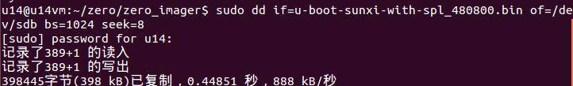
第二步，将内核文件，启动参数文件，dtb写入到tf卡的第一分区。
sudo mount /dev/sdb1 mnt/
sudo cp zImage mnt/
sudo cp sun8i-v3s-licheepi-zero*.dtb mnt/
sudo cp boot.scr mnt/
sync
sudo umount /dev/sdb1
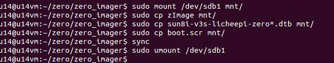
第三步，将根文件系统内容写入到tf卡的第二分区。
sudo mount /dev/sdb2 mnt/
sudo rm -rf mnt/*
sudo tar xzvf rootfs-minX.tar.gz -C mnt/
sudo cp -r overlay_rootfs-base/* mnt/
sudo cp -r overlay_rootfs-minX/* mnt/
sudo dd if=/dev/zero of=mnt/swap bs=1M count=128
sudo mkswap mnt/swap
sudo echo "/swap swap swap defaults 0 0" >> mnt/etc/fstab
sync
sudo umount /dev/sdb2
启动系统：
使用串口工具连接LicheePiZero,注意rx接tx，tx接rx，插入电脑，打开串口工具，我使用的是PuTTY_0.67.0.0.exe。有屏幕的插入屏幕。
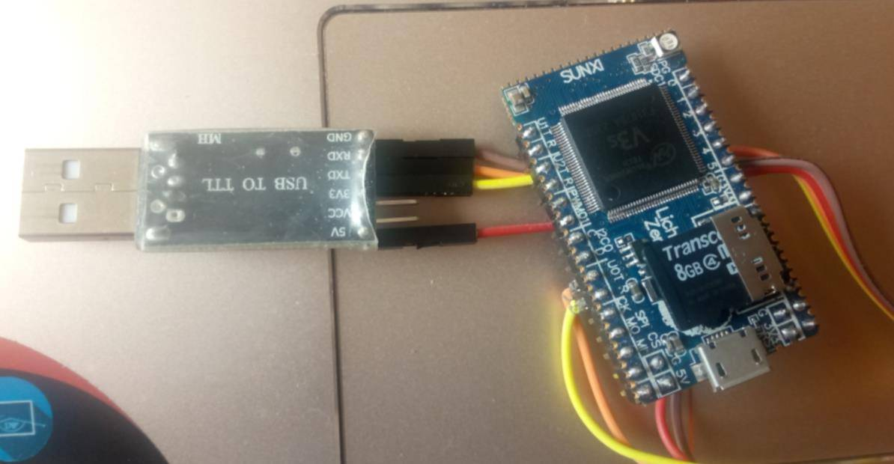
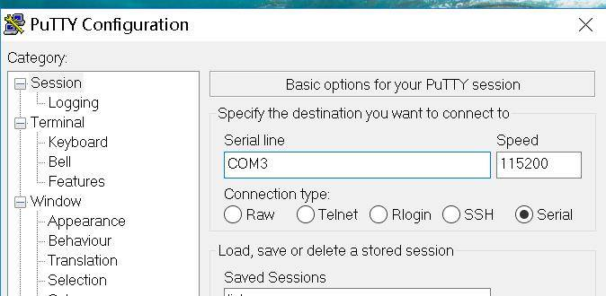
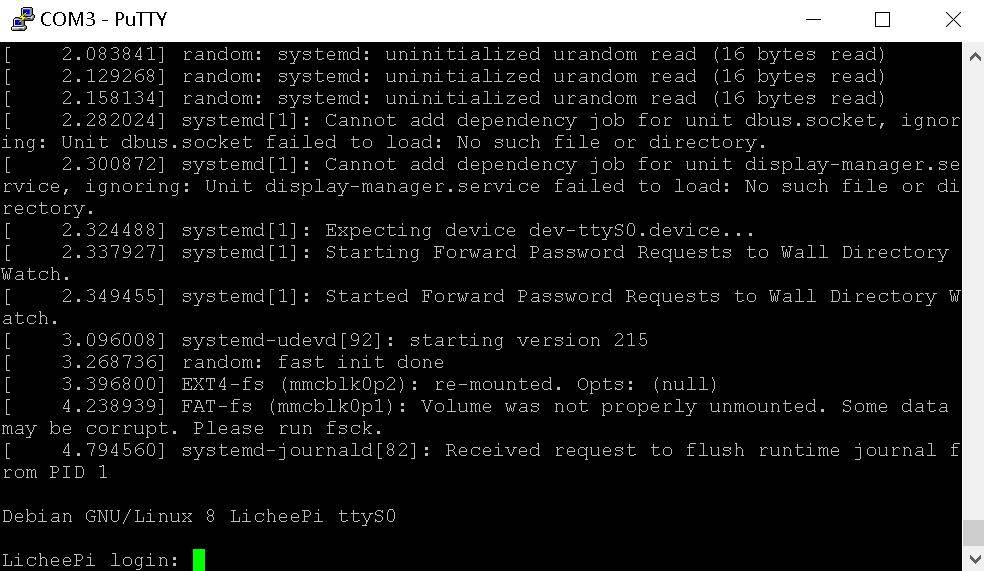
输入账号root密码licheepi，登陆到系统。